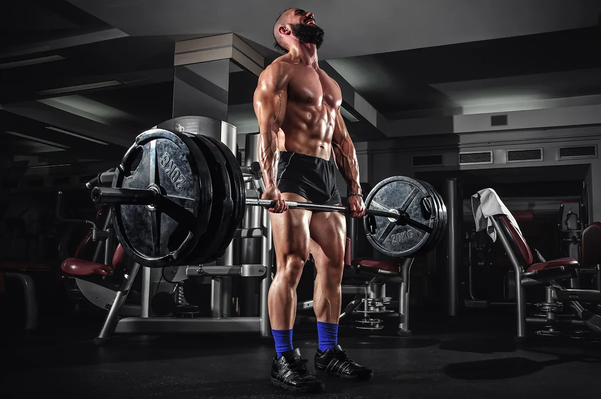

Maximise your raw strength and explosive power with this five day strength and power training plan to ensure you get the results you want from your time in the gym. With a combination of big compound movements and a mixture of pulls and presses, this plan can net great results.
Exercise Reps Sets Warm-up: Rower 2 - 5 mins 1 Push Press 4 to 8 4 Bench Press 4 to 8 4 Overhead Press 4 to 8 4 Incline Dumbbell Press 4 to 8 4 Plyometric press-ups (clap press-ups) To failure 4
xercise Reps Sets Warm-up: Rower 2 - 5 mins 1 Plyometric Box Jumps 4 to 8 4 Squats 4 to 8 4 Glute Bridge on Bench 4 to 8 4 Dead Lift 4 to 8 4 Overhead Press 4 to 8 4 Single Leg Press To failure 3 per leg
Exercise Reps Sets Warm-up: Rower 2 - 5 mins 1 Power Cleans 4 to 8 4 Pull-ups 4 to 8 4 Seated Row 4 to 8 4 Upright Row 4 to 8 4 Medicine Ball Slams 30 secs 4
Exercise Reps Sets Warm-up: Rower 2 - 5 mins 1 Sled Drags 4 to 8 4 Front Squats 4 to 8 4 Split Squats 4 to 8 3 Straight Leg Deadlift 4 to 8 3 Farmers Walk 25-30 metres 4
Exercise Reps Sets Warm-up: Rower 2 - 5 mins 1 High Intensity Interval Training HIIT - Running Machine 30 sec sprint, 30 sec rest 5 to 10